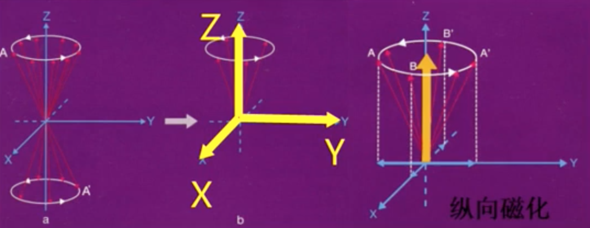
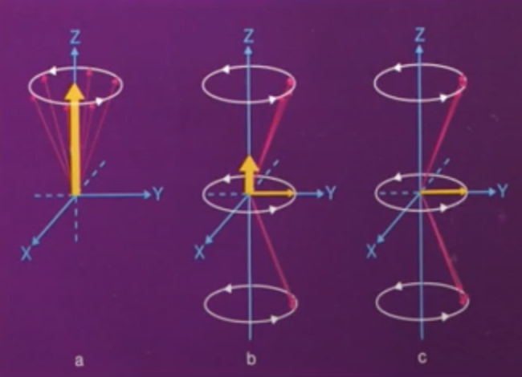
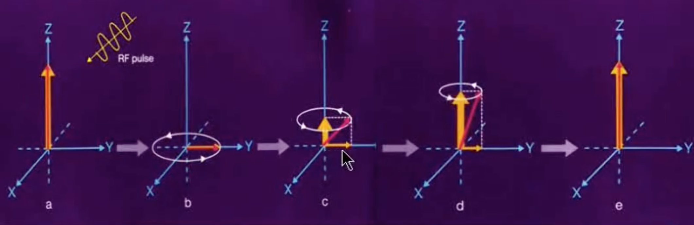
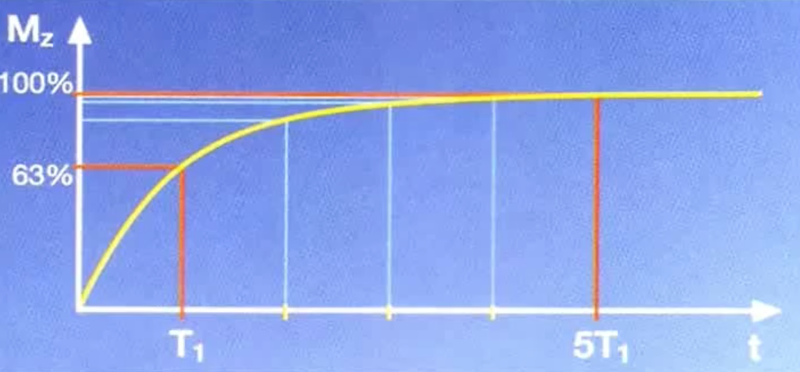
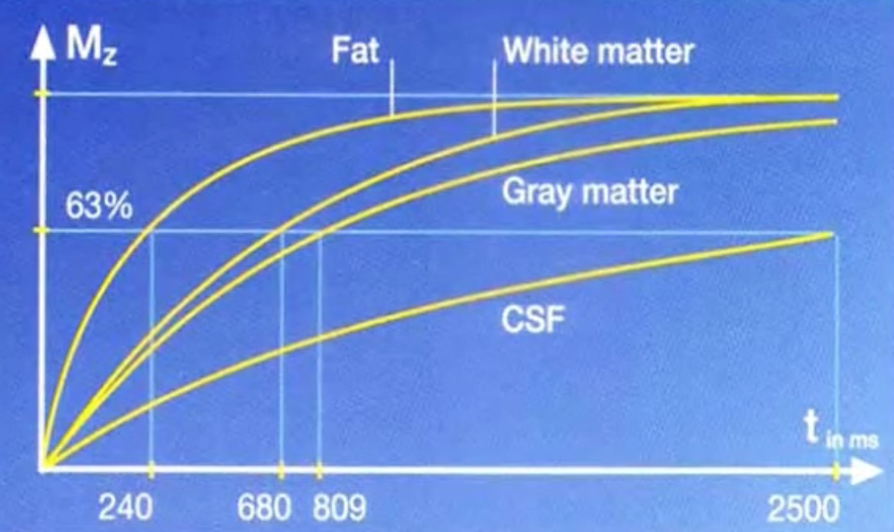
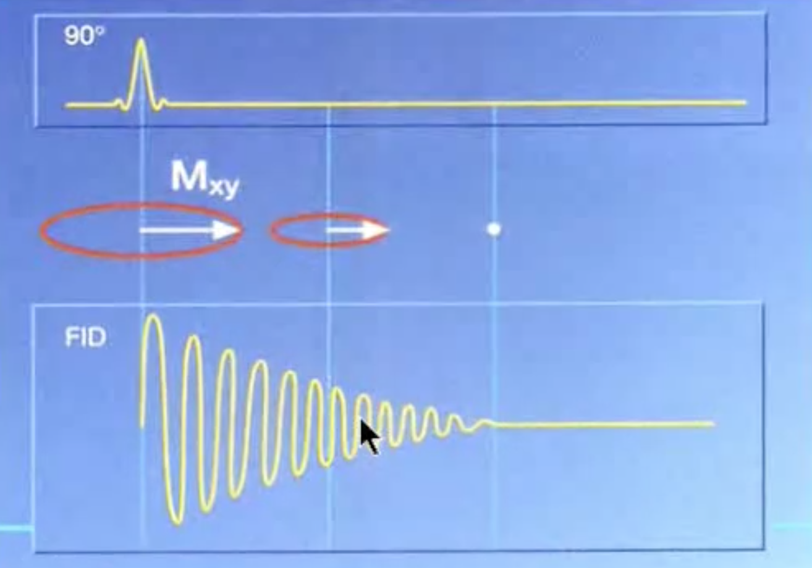
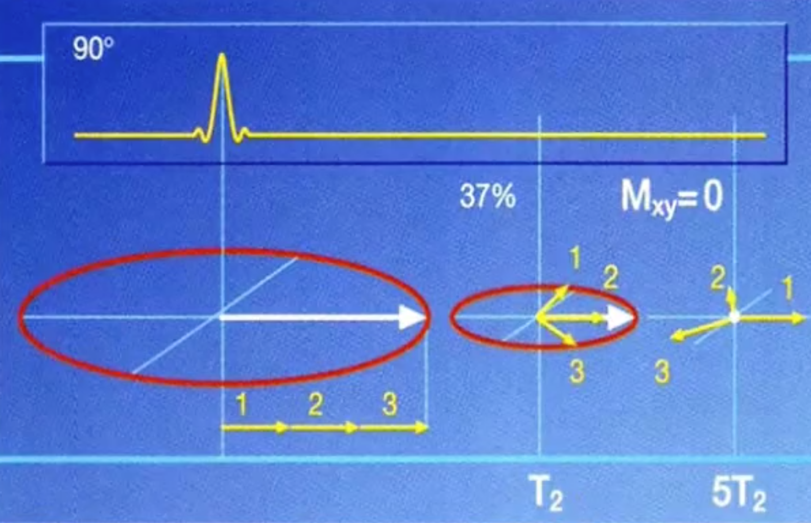
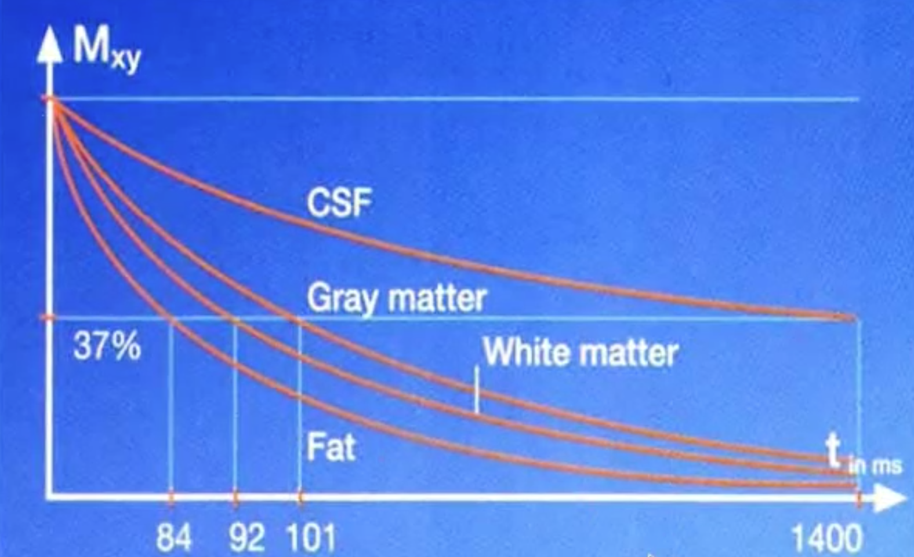

本文是斯图加特大学和图宾根医学院联合的MIDAS项目中的一部分，也是我研究生的小论文，也是读书这么多年做的唯一一个目前比较前沿的项目了，希望自己几个月的努力能对正在做类似项目或者写相关论文的同学有所帮助。
背景
磁共振相关基础知识
MRI基本原理
在强大外加磁场的作用下，体内的氢质子就会发生重排，能量低的质子就会顺着外加主磁场的方向（低能态），能量高的质子就会逆着外加磁场的方向（高能态）。但顺着外加磁场方向的质子远占优势，此时人体就带有磁性了，称为磁化。如下图所示A为施加磁场前氢质子的排列状态，B为施加磁场后氢质子的排列状态。
处于低能态的氢质子数量仅略多于处于高能态的氢质子，而多出来的这部分氢质子会产生一个纵向磁化矢量。但是这部分多出来的氢质子数量很少，在室温下：
0.2T: 1.3PPM
0.5T: 4.1PPM
1.0T: 7.0PPM
1.5T: 9.6PPM
T是施加的外界磁场强度单位特斯拉，PPM为百万分之一。下图是纵向磁化矢量：

因为氢原子一直在绕着Z轴进行进动(Precession)，所以在产生纵向磁化矢量的同时也在产生横向磁化矢量（正交分解）。但是各个质子的横向磁化矢量在XY平面方向各异，所以它们的矢量和可以约等于0，即没有横向磁化矢量。但是光凭微弱的纵向磁化矢量远不足以成像。所以要在均匀的强磁场中，施加90度射频脉冲激发，质子吸收能量后发生能态跃迁（低能态–>高能态），其方向转为逆外加磁场方向。并在某一时刻，顺、逆方向的质子数目相等，互相抵消。Z轴上的磁化矢量（纵向磁化）将变成0。此时，磁矩在X-Y平面上叠加，出现横向磁化矢量直至最大。这种旋转的横向磁化矢量切割接收线圈，此时MR可以检测到旋转的横向磁化矢量，如下图所示就是横向磁化矢量转变为纵向磁化矢量的过程：

- 无限电波激发后，人体内的宏观磁场偏转了90度，MRI可以检测到人体发出的信号
- 氢质子含量高的组织纵向磁化矢量大，90度脉冲后磁化矢量偏转，产生的旋转的宏观横向矢量越大，MR信号强度越高。
- 此时的MR图像可区分质子密度不同的两种组织。
- 但是检测到的仅仅是不同组织氢质子含量的差别，对于临床诊断来说是远远不够的。
- 我们总是在90度脉冲关闭后一定时间才进行MR信号采集。
无限电波激发使磁场偏转90度，关闭无线颠簸后，磁场又慢慢回到了平衡状态（纵向），如下图所示，在b点关闭无线电波：

射频脉冲停止后，在主磁场的作用下，横向宏观磁化矢量逐渐缩小到0，纵向宏观磁化矢量从0逐渐回到平衡状态，这个过程称为核磁弛豫。
核磁弛豫又可以分解为两个部分：
- 纵向弛豫(T1弛豫, 纵向磁化矢量恢复到原来63%所需要的时间)
- 横向弛豫(T2弛豫，横向磁化矢量丧失至37%所需时间)
纵向弛豫
也称为T1弛豫，是指90度脉冲关闭后，在主磁场的作用下，纵向磁化矢量开始恢复，直到恢复到平衡状态的过程。
90度激发 —-> 低能的质子获能进入高能状态
纵向弛豫 <—- 高能的质子释放能量
高能的质子把能量释放给周围的晶格（分子）。
晶格震动频率高于质子进动频率，能量传递慢 – 纯水
晶格振动频率接近于质子进动频率，能量传递快 – 脂肪
晶格振动频率低于质子进动频率，能量传递慢 – 含高浓度大分子蛋白质
如下图所示，横轴是时间，纵轴是Z轴矢量（纵向磁化矢量）的大小，描述的是纵向磁化矢量恢复到原来63%所需要的时间：

如下图所示是不同组织T1弛豫大小（不同组织的纵向磁化矢量恢复到原来63%所需要的时间）

横向弛豫
90度激发脉冲关闭后，所产生的横向磁化矢量很快衰减 – 自由感应衰减（FID），如下图所示：最上面的图表示的是射频脉冲信号随时间的变化，中间箭头表示的是横向磁化矢量（XY平面矢量）大小的变化。下面的图表示检测到的横向磁化矢量信号随时间变化的强弱。

横向磁化矢量的衰减是由于：
- 自旋质子暴露在不均匀的主磁场中
- 自旋质子暴露在临近自旋质子、其他自旋原子核、电子的微磁场环境中；由于分子的运动，质子周围的微磁场不断波动
- 每个质子感受的磁场不均匀
如下图所示，黄色箭头1、2、3分别表示3个氢质子进动产生的横向磁化矢量（正交分解后在XY平面上的磁化矢量），白色箭头是它们的矢量和。在T2时刻时，因为没有90度激发脉冲的作用，三个氢质子的相位开始分散（横向磁化矢量方向（黄色箭头1、2、3的方向）不一致），所以矢量和（白色箭头的长度）变小，变成左侧刚施加90度激发脉冲的时刻的横向磁化矢量的37%的大小。而到时间为5*T2时，横向磁化矢量即矢量和（白色箭头的大小）为0。

用T2值来描述组织的T2弛豫快慢，如下图所示，不同组织的T2弛豫不同。
